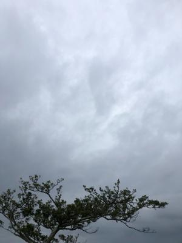
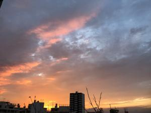

うるがいの話 ある日
最新: 運転席の窓ガラス閉まらず【うるがいの話 ある日】とは 一日だけのプログです
『うるがいの話』の最新一日だけのプログで、通信料が少なく経済的だ。カニの画像をクリックすると全ての日付が載る『うるがいの話』サイトを表示します
|
|
【うるがいの話】 うるがい(ｳﾙｶﾞｲ urugai)とは、『もずくがに』の名前でとても大きくなります。 |
|---|---|
|
|
【カミマヤーの話】 猫のことを方言でマヤーといいます。カミマヤー（kamimayaa）とは、神の猫のことです。 |
|
【たながぁの音楽】 たながぁ（ﾀﾅｶﾞｰ tanagaa）とは手長えびのことで、何種類かあり大きいのは車 エビぐらいになります。 |

|
【ぶながぁの話】 ぶながぁ(ﾌﾞﾅｶﾞｰ bunagaa)とは、赤い髪の毛、赤い身体、そして身長は１ｍ２０ｃｍ ぐらい、川の蟹を食べているの目撃された。場所は沖縄県国頭郡大宜味村のと ある村僕の隣近所に住んでいる爺さんから、聞いた話です。 |
|
|
【ギーマの話】 ギーマ(giima)とは、山原の里山に咲くスズランに似た、 花を付けます。実は食べられます、 気が付くと口の周りが紫になっています。 |
2022年11月08日 (火）運転席の窓ガラス閉まらず
17:15
 
時は日曜日の夜、子供から運転席の窓ガラス閉まらず、３分に１が空いたまま
になると連絡があった。そして、しもべえ（ＮＨＫドラマ１０「しもべえ」）
なる私は、午前中に子供アパートへ、バイクで行き、窓ガラスが空いたミラを
ダイハツの販売店へ持っていく。冷却水の漏れを含め修理をお願いし、台車を
借り一旦自宅へ帰る。そして仕事を終えた子供と連絡を取り、代車をアパート
へ届け、バイクで帰る。昼頃、修理担当から連絡があった。窓ガラスと冷却水
の修理で１０万ほどだが、冷却水の修理を終えた上でエンジンの確認をしない
といけなくて、エンジンがだめだとさらに３０万ほどかかるとのこと。・・・
これ以上は、無理だ新車だ。
コンロの水は、ガス会社によればドライアーで乾かせば直ると言われ、ドライ
アーを１０分ほどかけたがだめだった、ドライアーを持つのが難儀になったの
で扇風機の風をコンロに当てる、１０分程してコンロの火をつけた、点いた。
１７時１１分 ビットコインの総資産 ￥８、４０７↓